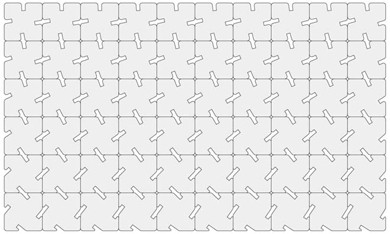
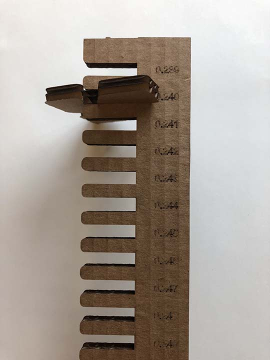
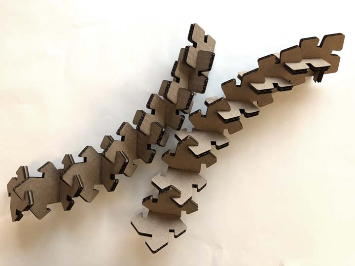
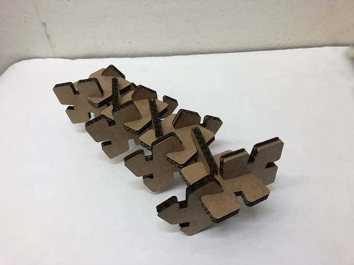
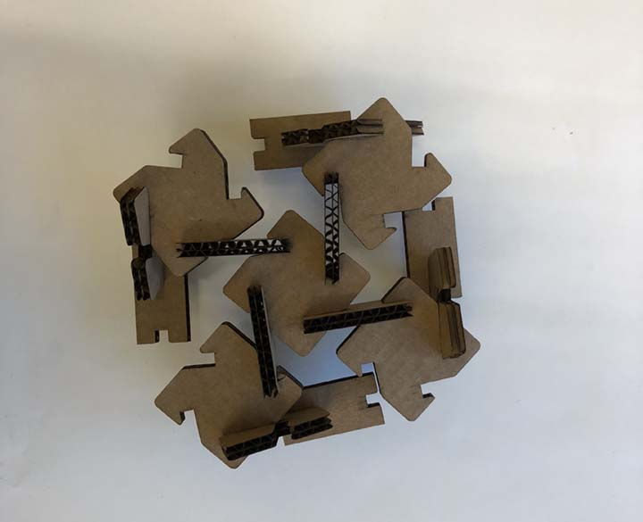
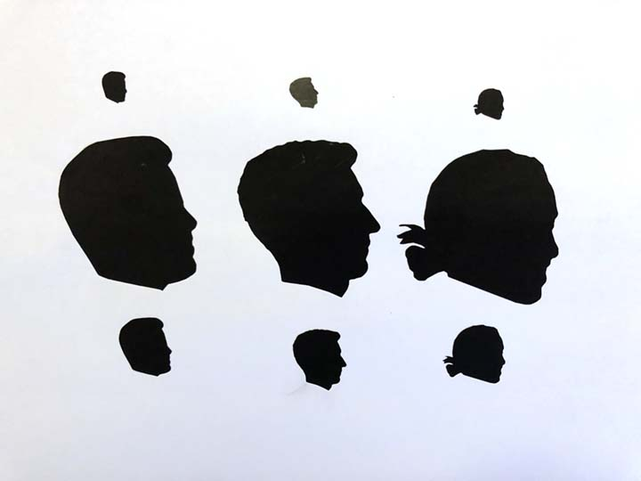

computer-controlled cutting
Usually when I laser cut, I do it with a specific form in mind. I’ve created some kind of three dimensional model in Rhino or Grasshopper, and want to build it out of planar pieces. In this case, since the goal was to create a press fit kit that could be assembled in multiple ways, I wanted to see how simple shapes could come together to create variable form.
Working in Grasshopper, I laid out pieces so that their notches rotated slightly between pieces. I was hoping that this would allow for snakes, planes, or volumes that would slope gradually. This is what the pieces looked like:

We characterized the laser cutter, testing notch dimensions and confirming the kerf width. Though the corrugated cardboard was 0.250” thick, the test notches (shown below) showed that the notches should be drawn at 0.240” wide to ensure that the pieces fit snugly without requiring too much force to go in. It took several test cuts to settle on a speed setting of 20% and power setting of 45% to get a clean cut on the machine.

After cutting the first set of pieces, the kit created natural arcing curves when assembled sequentially, as I had hoped. However, this only worked when the pieces were assembled linearly. Since the notches were positioned at the midpoints of the pieces’ edges, there were clashes when I tried to create more volumetric shapes.


To try to address this, I laser cut a few different types of spacers, which gave the primary pieces some room to breathe. This helped to create a wider range of ways to assemble the pieces together. Still, the natural curves that I was hoping to see when the pieces came together weren’t always apparent.

I vinyl cut stickers with my roommates’ profiles so that they could stick them to their things in the fridge. The vinyl cutter was relatively straightforward to use. It took a couple of tries to get the pressure high enough that it would cut through the vinyl but low enough that it wouldn’t cut through the substrate.
I ran into some issues loading the vinyl roll and setting the origin but was able to solve it with a bit of trial and error. The excess vinyl would have gone to waste, so I tried cutting the stickers at a few different sizes on the scrap.
